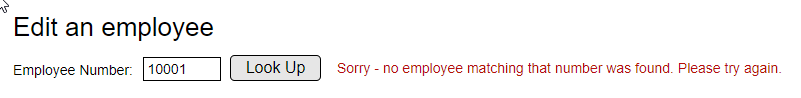
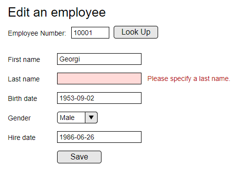

Dash10 PHP Tests
General notes
- You have two hours. Do whatever you can in this time.
- You don't have to complete the tests in order. Complete the tests you feel most comfortable with. Obviously the more of your skill they demonstrate the better. The tests are grouped into categories to help you identify what type of topics are being focused on.
- Feel free to use any libraries or other resources you want to help complete the tests
- Manage your time carefully: that's part of the test. We would prefer something that works over something fancy.
- If PHP isn't your preferred programming language let us know.
- Mockups presented below are just that - mockups. You don't have to have your pages styled to look exactly the same (colors, fonts etc) - they just show the general layout of elements to include in your solution.
- You will be provided access to a sample mysql database called 'employees' with a large amount of dummy data. This will be used in the various tests, and you can browse it using the phpmyadmin install on your machine.
- To talk with the database, you don't need to worry about connections & libraries. Simply call the function 'query', passing it sql and it execute your query. If it is a select statement it will return an array of associative arrays representing your query result.
- In all tests, the follow things are assessed:
- Accuracy of code - does the code do what is is supposed to.
- How many of the tests you completed.
- Elegance of algorithms - does the code work quickly and sensibly
- Readability of code - pay attention to things like variable names, comments in your code, formatting and general code readability
- You can click on any task to cross it out - this will help you keep track of what you have done & what remains to be done.
Test 1
- In the file test1.php, in the section with the comment 'SECTION 1', create a form that resembles the mockup below.

- When submitted, search for that employee number in the employees table. If it is found, the edit form will be shown with the employee data loaded into it (mockup below). If it is not found, an error will show (as shown above).
- When completing the edit form, verify using javascript that the data entered in the form is valid. If there is an error, show a helpful message and don't let the data be saved.
- For extra points consider the usability of your user interfaces - javascript powered validation feedback & interfaces with submissions over ajax (rather than page reloads on full form submission).

- Send the edit data to the PHP file 'test1-api.php'. This data should update the employee record in the database, and output a suitable success message. Hint: Consider security in this section.
Test 2 - SQL
For each of the following queries, retrieve the required data from the database & output it in an HTML table
- Output all tables onto the same page using the file test2.php.
- Limit each query to the first 100 results.
- The table will style automatically using the included CSS.
Queries:
- List all employees in the database who were have a birthday in March. Order by the youngest employees first.
- Retrieve a list of all employees who ever spent time in the Customer Service or Finance departments. Sort the data by department & then the first employees to serve in that department first.
- Retrieve a details of all active employees as at 3rd March, 1988 - along with their salary & current job title
- Retrieve a list of all departments, the total number of employees that have ever worked in each department, and the date of birth of the youngest person ever to have worked in that department (just the date itself - we don't need any other information about the person).
Test 3 - Object Orientation
Create a MVC 'model' pattern class for an Employee that allows you to retrieve & save an employee without writing SQL.
- Open the file called test3.php
- Create a class called 'employee'.
- Add methods for retrieve and save that implement the method documentation.
- To generate a new primary key for a new employee, call the global function generate_id()
- When your class is complete - the function test() should execute successfully and output no errors. If all tests pass, it will output a success message.
Extra for experts:
- Create a static factory method called 'get' which receives an employee number, and returns a new Employee instance with that employee's details pre-populated.